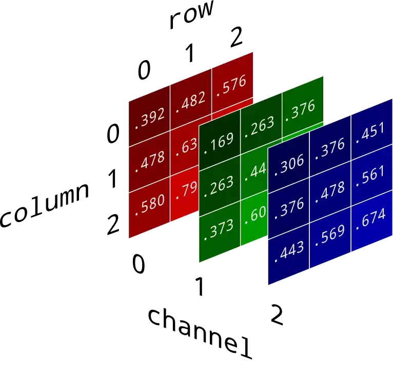
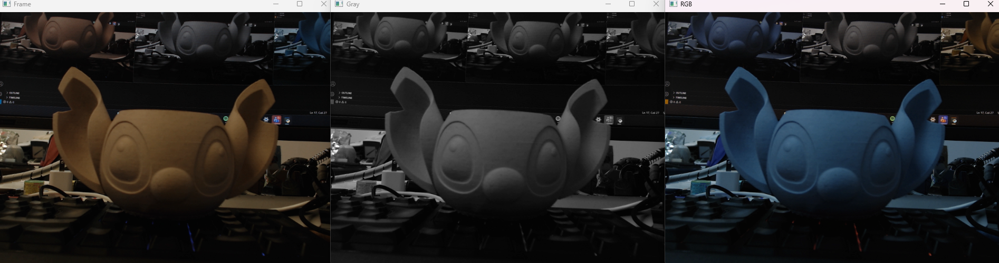
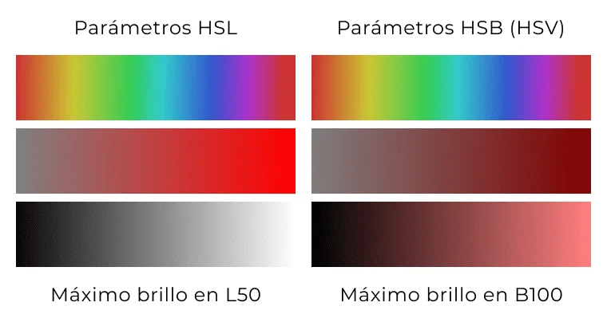
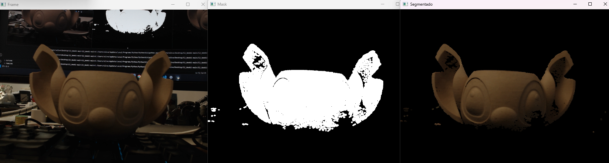
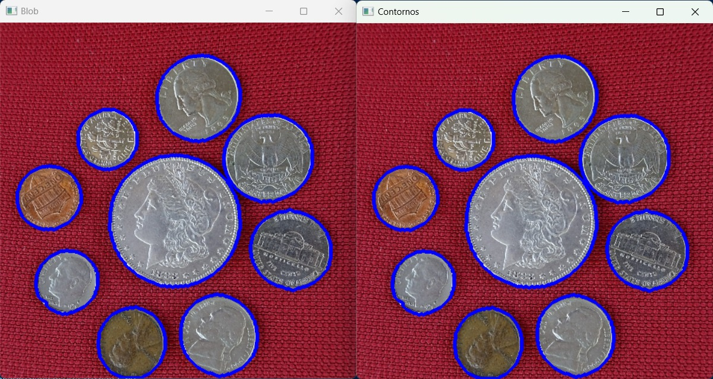

Visión por Computadora 101
Imágenes y procesamiento básico
Las imágenes digitales son matrices de píxeles. Cada píxel guarda intensidad y/o color. En el procesamiento de imágenes, estas matrices se manipulan para mejorar la calidad visual, extraer características o preparar datos para análisis posteriores.

Formato común de una imagen en memoria:
- Alto: píxeles verticales
- Ancho: píxeles horizontales
- Canales (p. ej., 3 para color)
- RGB: Rojo, Verde, Azul
- BGR: Azul, Verde, Rojo (OpenCV usa BGR por defecto)
- Grayscale: 1 canal (intensidad)
- RGBA: con alfa (transparencia)
- HSV: Matiz, Saturación, Valor (muy útil para segmentación por color)
Glosario rápido
- Frame: imagen de un video/cámara.
- Máscara: imagen binaria (0/255) que selecciona zonas.
- Kernel: matriz pequeña usada por filtros/morfología.
- Contorno: borde de una región blanca en una máscara.
Recordatorio de funciones OpenCV
cv2.imread(path),cv2.VideoCapture(idx|path),cv2.imshow(título, img)cv2.resize(img, (ancho, alto)),img.shape → (alto, ancho, canales)img[y1:y2, x1:x2](recorte),cv2.cvtColor(img, code)(recolor)- Dibujo:
cv2.circle,cv2.rectangle,cv2.line,cv2.putText
Ejemplo: shape
alto, ancho, canales = imagen.shape
# o:
alto = imagen.shape[0]; ancho = imagen.shape[1]; canales = imagen.shape[2]
Estructura base (cámara / video)
Loop de cámara robusto
import cv2
cap = cv2.VideoCapture(0) # prueba 0/1/2 si tienes varias cámaras
if not cap.isOpened():
raise RuntimeError("No se pudo abrir la cámara")
# Opcional: fija resolución (si la cámara lo permite)
cap.set(cv2.CAP_PROP_FRAME_WIDTH, 1280)
cap.set(cv2.CAP_PROP_FRAME_HEIGHT, 720)
while True:
ok, frame = cap.read()
if not ok:
break
cv2.imshow("Frame", frame)
if cv2.waitKey(1) & 0xFF == ord('q'): # presiona 'q' para salir
break
cap.release()
cv2.destroyAllWindows()
Recolor (cambios de espacio de color)
BGR→Grayscale / BGR→RGB / BGR→HSV
gray = cv2.cvtColor(frame, cv2.COLOR_BGR2GRAY)
rgb = cv2.cvtColor(frame, cv2.COLOR_BGR2RGB) # útil si muestras con matplotlib
hsv = cv2.cvtColor(frame, cv2.COLOR_BGR2HSV)

Segmentación por color (HSV + máscara):

| Color | H (min–max) | S (min–max) | V (min–max) | Tips rápidos |
|---|---|---|---|---|
| Rojo | 0–10 o 170–179 | 120–255 | 70–255 | Combina dos máscaras por el wrap de Hue. |
| Naranja | 10–20 | 120–255 | 80–255 | Sube V si está oscuro. |
| Amarillo | 20–35 | 120–255 | 120–255 | Baja S si se “lava”. |
| Verde | 35–85 | 60–255 | 60–255 | Amplía S/V para telas mate/hojas. |
| Cian | 85–100 | 60–255 | 60–255 | — |
| Azul | 100–130 | 60–255 | 60–255 | Sube V_min si es muy oscuro. |
| Magenta | 140–170 | 60–255 | 60–255 | Puede solaparse con rojos fríos. |
| Blanco | 0–179 | 0–30 | 200–255 | Bajo S, alto V (luces, brillos). |
| Gris | 0–179 | 0–50 | 50–200 | Bajo S, V medio. |
| Negro | 0–179 | 0–255 | 0–50 | V muy bajo. |
Notas rápidas:
- En OpenCV, H (Matiz) va de 0–179, S (Saturación) y V (Valor) van de 0–255.
- Los rangos son orientativos: ajusta según cámara, balance de blancos e iluminación.
Segmentar color en HSV
import numpy as np
hsv = cv2.cvtColor(frame, cv2.COLOR_BGR2HSV)
# ejemplo: detectar verdes (ajusta a tu iluminación)
low = np.array([35, 60, 60], dtype=np.uint8)
high = np.array([85, 255, 255], dtype=np.uint8)
mask = cv2.inRange(hsv, low, high)
seg = cv2.bitwise_and(frame, frame, mask=mask)
cv2.imshow("Mask", mask)
cv2.imshow("Segmentado", seg)

Tamaño (redimensionar y escalar)
Resize y escalado manteniendo aspecto
# Redimension exacto:
peque = cv2.resize(frame, (640, 360), interpolation=cv2.INTER_AREA)
# Escalar por factor:
factor = 0.5
esc = cv2.resize(frame, None, fx=factor, fy=factor, interpolation=cv2.INTER_AREA)
# Upscaling más suave:
grande = cv2.resize(frame, None, fx=2, fy=2, interpolation=cv2.INTER_CUBIC)
Umbrales (binarización)
Umbral fijo, Otsu y adaptativo
gray = cv2.cvtColor(frame, cv2.COLOR_BGR2GRAY)
# Umbral fijo (binario):
_, bin_fixed = cv2.threshold(gray, 120, 255, cv2.THRESH_BINARY)
# Otsu (elige umbral automático):
_, bin_otsu = cv2.threshold(gray, 0, 255, cv2.THRESH_BINARY + cv2.THRESH_OTSU)
# Umbral adaptativo (útil con iluminación desigual):
bin_adapt = cv2.adaptiveThreshold(
gray, 255, cv2.ADAPTIVE_THRESH_GAUSSIAN_C, cv2.THRESH_BINARY,
21, 5 # tamaño de bloque (impar) y constante de ajuste
)
Limpieza morfológica (erosión, dilatación, apertura, cierre)
Erosión / dilatación / apertura / cierre
import numpy as np
# parte de una máscara binaria (p. ej., bin_otsu o 'mask' en HSV)
mask = bin_otsu
kernel = cv2.getStructuringElement(cv2.MORPH_RECT, (5,5))
erosion = cv2.erode(mask, kernel, iterations=1) # encoge blancos
dilat = cv2.dilate(mask, kernel, iterations=1) # expande blancos
opening = cv2.morphologyEx(mask, cv2.MORPH_OPEN, kernel, 1) # quita ruido pequeño
closing = cv2.morphologyEx(mask, cv2.MORPH_CLOSE, kernel, 1) # cierra huecos
Tipos de Ruido
- Ruido salpicado → apertura
- Huecos internos → cierre
- Bordes “comidos” → menos erosión o kernel más pequeño
- Objetos delgados rotos → menos apertura o kernel más chico
Filtros (suavizado / reducción de ruido)
Filtros comunes
# Desenfoque Gaussiano (ruido blanco, suaviza bordes):
gauss = cv2.GaussianBlur(frame, (5,5), sigmaX=0)
# Mediana (muy bueno para ruido sal y pimienta):
median = cv2.medianBlur(frame, 5)
# Bilateral (suaviza preservando bordes; costoso):
bilat = cv2.bilateralFilter(frame, d=9, sigmaColor=75, sigmaSpace=75)
# Promedio (box blur):
box = cv2.blur(frame, (5,5))
Sugerencias
- Antes de umbralizar, aplica GaussianBlur o medianBlur.
- Para conservar bordes de color, prueba bilateral.
Contornos y centros (centroides)
Encontrar contornos y centroides
# 1) Asegúrate de tener una máscara binaria limpia
mask = opening # por ejemplo, tras apertura
# 2) Buscar contornos (usa RETR_EXTERNAL para externos)
contours, _ = cv2.findContours(mask, cv2.RETR_EXTERNAL, cv2.CHAIN_APPROX_SIMPLE)
canvas = frame.copy()
for c in contours:
area = cv2.contourArea(c)
if area < 200: # filtra ruido muy pequeño
continue
# Dibujo del contorno:
cv2.drawContours(canvas, [c], -1, (0,255,0), 2)
# Rectángulo axis-aligned:
x, y, w, h = cv2.boundingRect(c)
cv2.rectangle(canvas, (x,y), (x+w, y+h), (255,0,0), 2)
# Círculo mínimo envolvente:
(cx, cy), rad = cv2.minEnclosingCircle(c)
cv2.circle(canvas, (int(cx), int(cy)), int(rad), (0,255,255), 2)
# Centroides con momentos:
M = cv2.moments(c)
if M["m00"] != 0:
cx_m = int(M["m10"] / M["m00"])
cy_m = int(M["m01"] / M["m00"])
cv2.circle(canvas, (cx_m, cy_m), 4, (0,0,255), -1)
cv2.putText(canvas, f"({cx_m},{cy_m})", (cx_m+6, cy_m-6),
cv2.FONT_HERSHEY_SIMPLEX, 0.5, (0,0,255), 1)
# canvas ahora contiene contornos y centros dibujados

Mini-pipeline integrado (color → limpieza → contornos → centro)
Ejemplo completo: detectar un color y obtener su centro
import cv2, numpy as np
cap = cv2.VideoCapture(0)
if not cap.isOpened():
raise RuntimeError("No se pudo abrir la cámara")
while True:
ok, frame = cap.read()
if not ok:
break
# 1) Color → HSV y máscara (rojo: dos rangos porque H envuelve 0/180)
hsv = cv2.cvtColor(frame, cv2.COLOR_BGR2HSV)
low1, high1 = np.array([0,120,70]), np.array([10,255,255])
low2, high2 = np.array([170,120,70]), np.array([180,255,255])
mask = cv2.inRange(hsv, low1, high1) | cv2.inRange(hsv, low2, high2)
# 2) Limpieza morfológica
kernel = cv2.getStructuringElement(cv2.MORPH_ELLIPSE, (7,7))
mask = cv2.morphologyEx(mask, cv2.MORPH_OPEN, kernel, iterations=1)
mask = cv2.morphologyEx(mask, cv2.MORPH_CLOSE, kernel, iterations=1)
# 3) Contornos
cnts, _ = cv2.findContours(mask, cv2.RETR_EXTERNAL, cv2.CHAIN_APPROX_SIMPLE)
out = frame.copy()
for c in cnts:
if cv2.contourArea(c) < 400:
continue
(cx, cy), r = cv2.minEnclosingCircle(c)
cx, cy = int(cx), int(cy)
cv2.circle(out, (cx, cy), int(r), (0,255,255), 2)
cv2.circle(out, (cx, cy), 5, (0,0,255), -1)
cv2.putText(out, f"Centro: {cx},{cy}", (cx+8, cy-8),
cv2.FONT_HERSHEY_SIMPLEX, 0.6, (0,0,255), 2)
# 4) Mostrar
cv2.imshow("Mask", mask)
cv2.imshow("Detección", out)
if cv2.waitKey(1) & 0xFF == ord('q'):
break
cap.release()
cv2.destroyAllWindows()